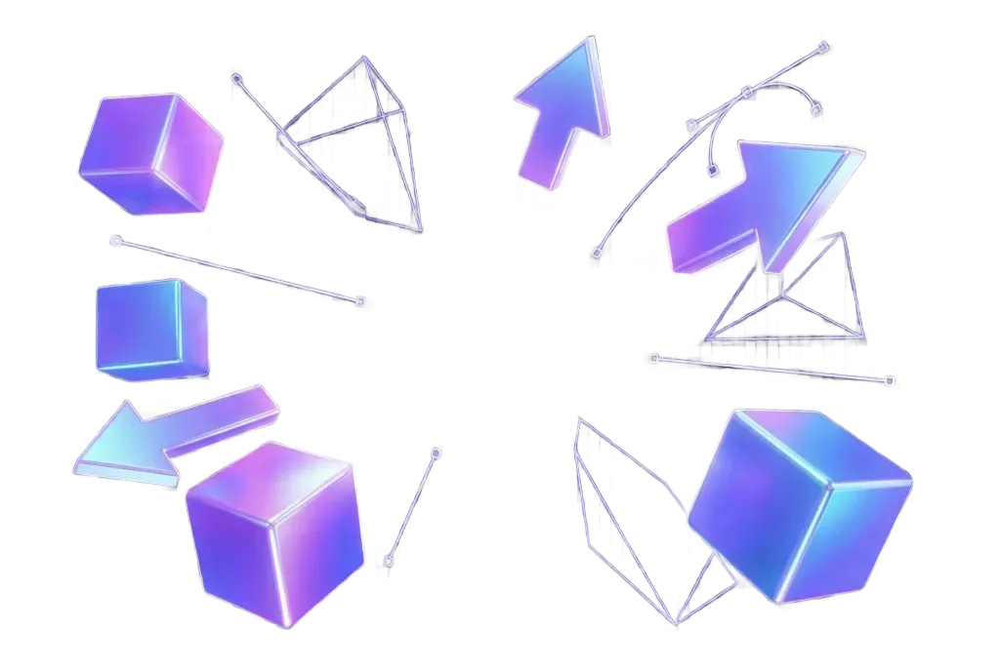

Скоро...
⏺ Возможности Blender (Узнаете, какие дополнения и другие
программы используют в индустрии для создания крутой графики.)
⏺ Создание композиции из примитивов (Научитесь создавать и
трансформировать объекты. Создадите объёмную композицию в
пространстве с помощью геометрических примитивов с различными
материалами и источниками освещения.)
⏺ Полигональное моделирование (Познакомитесь с полигональным
моделированием, основными дополнениями и модификаторами для него.
Сделаете стилизованный low-poly-интерьер.)
⏺ Скульптинг (Изучите классический пайплайн моделирования:
скульпт, ретопологию, запекание. Познакомитесь с разными типами
кистей и их параметрами. Сделаете несложную модель персонажа.)
⏺ UV-MAPPING (Поймёте, как связано UV-пространство модели и
её геометрия. Научитесь создавать UV-развёртку объектов.
Подготовите развёртку мультипликационного интерьера и персонажа)
⏺ Работа с текстурами (Изучите основы ручного рисования по
объектам и UV-развёрткам. Поработаете с текстурами: добавите
растровые и процедурные текстуры в сцену с интерьером, сделаете
хэндпэйнт текстуры для персонажа.)
⏺ Визуализация и свет (Познакомитесь с GPU- и CPU-рендерами.
Сможете настраивать открытое, закрытое, предметное освещение для
разных типов пространств. Соберёте композицию из объектов, которые
сделали в предыдущих модулях. Добавите свет.)
⏺ Возможности Gimp (Узнаете, как настроить рабочее
пространство под себя и какие инструменты используют
профессиональные 2D-художники. Разберетесь в логике работы слоев,
масок и режимов наложения для создания сложных эффектов.)
⏺ Создание композиции из примитивов (Научитесь видеть объем
в простых формах. Используя кисти и градиенты, превратите плоские
фигуры в объемные шары, кубы и цилиндры. Создадите абстрактную
композицию, работая со светом, тенью и рефлексами.)
⏺ Рисование игрового объекта (Познакомитесь с пайплайном
создания пропсов. Научитесь передавать свойства материалов:
дерево, металл, камень. Нарисуете детализированный предмет для
игры — например, магический сундук или футуристичный гаджет.)
⏺ Рисование игровой локации (Изучите правила линейной и
воздушной перспективы. Научитесь работать с плановостью (передний,
средний, задний планы). Создадите концепт-арт окружения: от
наброска композиции до финальной прорисовки атмосферы.)
⏺ Рисование сложного персонажа (Освоите основы анатомии и
построение динамичных поз. Научитесь передавать характер через
силуэт, костюм и эмоции. Пройдете путь от быстрого скетча до
полноцветного концепта героя с проработкой деталей.)
⏺ Разработка рекламного постера для игры (Узнаете секреты
эффектной верстки и работы с типографикой. Объедините созданного
персонажа и локацию в одну эффектную композицию. Добавите
спецэффекты, логотип и проведете финальную цветокоррекцию
проекта.)
⏺ P.s Для закрепления материала в программе предусмотрено
использование графического планшета, что позволит ребятам освоить
контроль нажима кисти и технику «живого» рисования.
⏺ Прототипирование в Figma (Узнаете, как проектировать
интерфейсы: от простых скелетов (Wireframes) до полноценных
макетов. Научитесь работать с компонентами, сетками и создадите
интерактивный прототип сайта, где кнопки кликаются, а меню
открываются.)
⏺ Основы вёрстки HTML + CSS и первый лендинг (Познакомитесь
со структурой веб-страниц и правилами оформления элементов.
Разберетесь, как превращать картинку из Figma в код. Сверстаете
свой первый одностраничный сайт с правильной семантикой и
стилями.)
⏺ Адаптивность и многостраничный сайт (Освоите современные
технологии Flexbox и CSS Grid для управления сложными раскладками.
Научитесь делать сайты, которые идеально выглядят на смартфонах,
планшетах и мониторах. Соберете полноценный проект из нескольких
страниц.)
⏺ Программирование JS и интерактивное web-приложение
(Оживите свои проекты с помощью JavaScript. Изучите логику кода:
переменные, функции и условия. Создадите веб-приложение, которое
реагирует на действия пользователя — например, динамический список
задач или калькулятор с расчетами.)
1. Общие положения Настоящая политика обработки персональных данных составлена в соответствии с требованиями Федерального закона от 27.07.2006. № 152-ФЗ «О персональных данных» (далее — Закон о персональных данных) и определяет порядок обработки персональных данных и меры по обеспечению безопасности персональных данных, предпринимаемые Патрин Александр Алексеевич (далее — Оператор). 1.1. Оператор ставит своей важнейшей целью и условием осуществления своей деятельности соблюдение прав и свобод человека и гражданина при обработке его персональных данных, в том числе защиты прав на неприкосновенность частной жизни, личную и семейную тайну. 1.2. Настоящая политика Оператора в отношении обработки персональных данных (далее — Политика) применяется ко всей информации, которую Оператор может получить о посетителях веб-сайта https://akulhamer.github.io/Portfolio/. 2. Основные понятия, используемые в Политике 2.1. Автоматизированная обработка персональных данных — обработка персональных данных с помощью средств вычислительной техники. 2.2. Блокирование персональных данных — временное прекращение обработки персональных данных (за исключением случаев, если обработка необходима для уточнения персональных данных). 2.3. Веб-сайт — совокупность графических и информационных материалов, а также программ для ЭВМ и баз данных, обеспечивающих их доступность в сети интернет по сетевому адресу https://akulhamer.github.io/Portfolio/. 2.4. Информационная система персональных данных — совокупность содержащихся в базах данных персональных данных и обеспечивающих их обработку информационных технологий и технических средств. 2.5. Обезличивание персональных данных — действия, в результате которых невозможно определить без использования дополнительной информации принадлежность персональных данных конкретному Пользователю или иному субъекту персональных данных. 2.6. Обработка персональных данных — любое действие (операция) или совокупность действий (операций), совершаемых с использованием средств автоматизации или без использования таких средств с персональными данными, включая сбор, запись, систематизацию, накопление, хранение, уточнение (обновление, изменение), извлечение, использование, передачу (распространение, предоставление, доступ), обезличивание, блокирование, удаление, уничтожение персональных данных. 2.7. Оператор — государственный орган, муниципальный орган, юридическое или физическое лицо, самостоятельно или совместно с другими лицами организующие и/или осуществляющие обработку персональных данных, а также определяющие цели обработки персональных данных, состав персональных данных, подлежащих обработке, действия (операции), совершаемые с персональными данными. 2.8. Персональные данные — любая информация, относящаяся прямо или косвенно к определенному или определяемому Пользователю веб-сайта https://akulhamer.github.io/Portfolio/. 2.9. Персональные данные, разрешенные субъектом персональных данных для распространения, — персональные данные, доступ неограниченного круга лиц к которым предоставлен субъектом персональных данных путем дачи согласия на обработку персональных данных, разрешенных субъектом персональных данных для распространения в порядке, предусмотренном Законом о персональных данных (далее — персональные данные, разрешенные для распространения). 2.10. Пользователь — любой посетитель веб-сайта https://akulhamer.github.io/Portfolio/. 2.11. Предоставление персональных данных — действия, направленные на раскрытие персональных данных определенному лицу или определенному кругу лиц. 2.12. Распространение персональных данных — любые действия, направленные на раскрытие персональных данных неопределенному кругу лиц (передача персональных данных) или на ознакомление с персональными данными неограниченного круга лиц, в том числе обнародование персональных данных в средствах массовой информации, размещение в информационно-телекоммуникационных сетях или предоставление доступа к персональным данным каким-либо иным способом. 2.13. Трансграничная передача персональных данных — передача персональных данных на территорию иностранного государства органу власти иностранного государства, иностранному физическому или иностранному юридическому лицу. 2.14. Уничтожение персональных данных — любые действия, в результате которых персональные данные уничтожаются безвозвратно с невозможностью дальнейшего восстановления содержания персональных данных в информационной системе персональных данных и/или уничтожаются материальные носители персональных данных. 3. Основные права и обязанности Оператора 3.1. Оператор имеет право: — получать от субъекта персональных данных достоверные информацию и/или документы, содержащие персональные данные; — в случае отзыва субъектом персональных данных согласия на обработку персональных данных, а также, направления обращения с требованием о прекращении обработки персональных данных, Оператор вправе продолжить обработку персональных данных без согласия субъекта персональных данных при наличии оснований, указанных в Законе о персональных данных; — самостоятельно определять состав и перечень мер, необходимых и достаточных для обеспечения выполнения обязанностей, предусмотренных Законом о персональных данных и принятыми в соответствии с ним нормативными правовыми актами, если иное не предусмотрено Законом о персональных данных или другими федеральными законами. 3.2. Оператор обязан: — предоставлять субъекту персональных данных по его просьбе информацию, касающуюся обработки его персональных данных; — организовывать обработку персональных данных в порядке, установленном действующим законодательством РФ; — отвечать на обращения и запросы субъектов персональных данных и их законных представителей в соответствии с требованиями Закона о персональных данных; — сообщать в уполномоченный орган по защите прав субъектов персональных данных по запросу этого органа необходимую информацию в течение 10 дней с даты получения такого запроса; — публиковать или иным образом обеспечивать неограниченный доступ к настоящей Политике в отношении обработки персональных данных; — принимать правовые, организационные и технические меры для защиты персональных данных от неправомерного или случайного доступа к ним, уничтожения, изменения, блокирования, копирования, предоставления, распространения персональных данных, а также от иных неправомерных действий в отношении персональных данных; — прекратить передачу (распространение, предоставление, доступ) персональных данных, прекратить обработку и уничтожить персональные данные в порядке и случаях, предусмотренных Законом о персональных данных; — исполнять иные обязанности, предусмотренные Законом о персональных данных. 4. Основные права и обязанности субъектов персональных данных 4.1. Субъекты персональных данных имеют право: — получать информацию, касающуюся обработки его персональных данных, за исключением случаев, предусмотренных федеральными законами. Сведения предоставляются субъекту персональных данных Оператором в доступной форме, и в них не должны содержаться персональные данные, относящиеся к другим субъектам персональных данных, за исключением случаев, когда имеются законные основания для раскрытия таких персональных данных. Перечень информации и порядок ее получения установлен Законом о персональных данных; — требовать от оператора уточнения его персональных данных, их блокирования или уничтожения в случае, если персональные данные являются неполными, устаревшими, неточными, незаконно полученными или не являются необходимыми для заявленной цели обработки, а также принимать предусмотренные законом меры по защите своих прав; — выдвигать условие предварительного согласия при обработке персональных данных в целях продвижения на рынке товаров, работ и услуг; — на отзыв согласия на обработку персональных данных, а также, на направление требования о прекращении обработки персональных данных; — обжаловать в уполномоченный орган по защите прав субъектов персональных данных или в судебном порядке неправомерные действия или бездействие Оператора при обработке его персональных данных; — на осуществление иных прав, предусмотренных законодательством РФ. 4.2. Субъекты персональных данных обязаны: — предоставлять Оператору достоверные данные о себе; — сообщать Оператору об уточнении (обновлении, изменении) своих персональных данных. 4.3. Лица, передавшие Оператору недостоверные сведения о себе, либо сведения о другом субъекте персональных данных без согласия последнего, несут ответственность в соответствии с законодательством РФ. 5. Принципы обработки персональных данных 5.1. Обработка персональных данных осуществляется на законной и справедливой основе. 5.2. Обработка персональных данных ограничивается достижением конкретных, заранее определенных и законных целей. Не допускается обработка персональных данных, несовместимая с целями сбора персональных данных. 5.3. Не допускается объединение баз данных, содержащих персональные данные, обработка которых осуществляется в целях, несовместимых между собой. 5.4. Обработке подлежат только персональные данные, которые отвечают целям их обработки. 5.5. Содержание и объем обрабатываемых персональных данных соответствуют заявленным целям обработки. Не допускается избыточность обрабатываемых персональных данных по отношению к заявленным целям их обработки. 5.6. При обработке персональных данных обеспечивается точность персональных данных, их достаточность, а в необходимых случаях и актуальность по отношению к целям обработки персональных данных. Оператор принимает необходимые меры и/или обеспечивает их принятие по удалению или уточнению неполных или неточных данных. 5.7. Хранение персональных данных осуществляется в форме, позволяющей определить субъекта персональных данных, не дольше, чем этого требуют цели обработки персональных данных, если срок хранения персональных данных не установлен федеральным законом, договором, стороной которого, выгодоприобретателем или поручителем по которому является субъект персональных данных. Обрабатываемые персональные данные уничтожаются либо обезличиваются по достижении целей обработки или в случае утраты необходимости в достижении этих целей, если иное не предусмотрено федеральным законом. 6. Цели обработки персональных данных Цель обработки информирование Пользователя посредством отправки электронных писем Персональные данные фамилия, имя, отчество электронный адрес номера телефонов Правовые основания Федеральный закон «Об информации, информационных технологиях и о защите информации» от 27.07.2006 N 149-ФЗ Виды обработки персональных данных Сбор, запись, систематизация, накопление, хранение, уничтожение и обезличивание персональных данных 7. Условия обработки персональных данных 7.1. Обработка персональных данных осуществляется с согласия субъекта персональных данных на обработку его персональных данных. 7.2. Обработка персональных данных необходима для достижения целей, предусмотренных международным договором Российской Федерации или законом, для осуществления возложенных законодательством Российской Федерации на оператора функций, полномочий и обязанностей. 7.3. Обработка персональных данных необходима для осуществления правосудия, исполнения судебного акта, акта другого органа или должностного лица, подлежащих исполнению в соответствии с законодательством Российской Федерации об исполнительном производстве. 7.4. Обработка персональных данных необходима для исполнения договора, стороной которого либо выгодоприобретателем или поручителем по которому является субъект персональных данных, а также для заключения договора по инициативе субъекта персональных данных или договора, по которому субъект персональных данных будет являться выгодоприобретателем или поручителем. 7.5. Обработка персональных данных необходима для осуществления прав и законных интересов оператора или третьих лиц либо для достижения общественно значимых целей при условии, что при этом не нарушаются права и свободы субъекта персональных данных. 7.6. Осуществляется обработка персональных данных, доступ неограниченного круга лиц к которым предоставлен субъектом персональных данных либо по его просьбе (далее — общедоступные персональные данные). 7.7. Осуществляется обработка персональных данных, подлежащих опубликованию или обязательному раскрытию в соответствии с федеральным законом. 8. Порядок сбора, хранения, передачи и других видов обработки персональных данных Безопасность персональных данных, которые обрабатываются Оператором, обеспечивается путем реализации правовых, организационных и технических мер, необходимых для выполнения в полном объеме требований действующего законодательства в области защиты персональных данных. 8.1. Оператор обеспечивает сохранность персональных данных и принимает все возможные меры, исключающие доступ к персональным данным неуполномоченных лиц. 8.2. Персональные данные Пользователя никогда, ни при каких условиях не будут переданы третьим лицам, за исключением случаев, связанных с исполнением действующего законодательства либо в случае, если субъектом персональных данных дано согласие Оператору на передачу данных третьему лицу для исполнения обязательств по гражданско-правовому договору. 8.3. В случае выявления неточностей в персональных данных, Пользователь может актуализировать их самостоятельно, путем направления Оператору уведомление на адрес электронной почты Оператора alexanderpatrin9102@gmail.com с пометкой «Актуализация персональных данных». 8.4. Срок обработки персональных данных определяется достижением целей, для которых были собраны персональные данные, если иной срок не предусмотрен договором или действующим законодательством. Пользователь может в любой момент отозвать свое согласие на обработку персональных данных, направив Оператору уведомление посредством электронной почты на электронный адрес Оператора alexanderpatrin9102@gmail.com с пометкой «Отзыв согласия на обработку персональных данных». 8.5. Вся информация, которая собирается сторонними сервисами, в том числе платежными системами, средствами связи и другими поставщиками услуг, хранится и обрабатывается указанными лицами (Операторами) в соответствии с их Пользовательским соглашением и Политикой конфиденциальности. Субъект персональных данных и/или с указанными документами. Оператор не несет ответственность за действия третьих лиц, в том числе указанных в настоящем пункте поставщиков услуг. 8.6. Установленные субъектом персональных данных запреты на передачу (кроме предоставления доступа), а также на обработку или условия обработки (кроме получения доступа) персональных данных, разрешенных для распространения, не действуют в случаях обработки персональных данных в государственных, общественных и иных публичных интересах, определенных законодательством РФ. 8.7. Оператор при обработке персональных данных обеспечивает конфиденциальность персональных данных. 8.8. Оператор осуществляет хранение персональных данных в форме, позволяющей определить субъекта персональных данных, не дольше, чем этого требуют цели обработки персональных данных, если срок хранения персональных данных не установлен федеральным законом, договором, стороной которого, выгодоприобретателем или поручителем по которому является субъект персональных данных. 8.9. Условием прекращения обработки персональных данных может являться достижение целей обработки персональных данных, истечение срока действия согласия субъекта персональных данных, отзыв согласия субъектом персональных данных или требование о прекращении обработки персональных данных, а также выявление неправомерной обработки персональных данных. 9. Перечень действий, производимых Оператором с полученными персональными данными 9.1. Оператор осуществляет сбор, запись, систематизацию, накопление, хранение, уточнение (обновление, изменение), извлечение, использование, передачу (распространение, предоставление, доступ), обезличивание, блокирование, удаление и уничтожение персональных данных. 9.2. Оператор осуществляет автоматизированную обработку персональных данных с получением и/или передачей полученной информации по информационно-телекоммуникационным сетям или без таковой. 10. Трансграничная передача персональных данных 10.1. Оператор до начала осуществления деятельности по трансграничной передаче персональных данных обязан уведомить уполномоченный орган по защите прав субъектов персональных данных о своем намерении осуществлять трансграничную передачу персональных данных (такое уведомление направляется отдельно от уведомления о намерении осуществлять обработку персональных данных). 10.2. Оператор до подачи вышеуказанного уведомления, обязан получить от органов власти иностранного государства, иностранных физических лиц, иностранных юридических лиц, которым планируется трансграничная передача персональных данных, соответствующие сведения. 11. Конфиденциальность персональных данных Оператор и иные лица, получившие доступ к персональным данным, обязаны не раскрывать третьим лицам и не распространять персональные данные без согласия субъекта персональных данных, если иное не предусмотрено федеральным законом. 12. Заключительные положения 12.1. Пользователь может получить любые разъяснения по интересующим вопросам, касающимся обработки его персональных данных, обратившись к Оператору с помощью электронной почты alexanderpatrin9102@gmail.com. 12.2. В данном документе будут отражены любые изменения политики обработки персональных данных Оператором. Политика действует бессрочно до замены ее новой версией. 12.3. Актуальная версия Политики в свободном доступе расположена в сети Интернет по адресу https://akulhamer.github.io/Portfolio/.